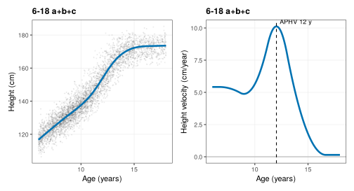
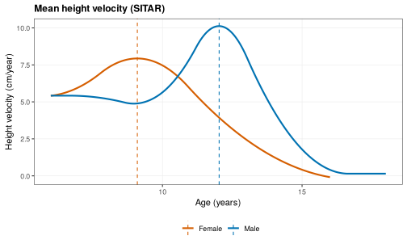
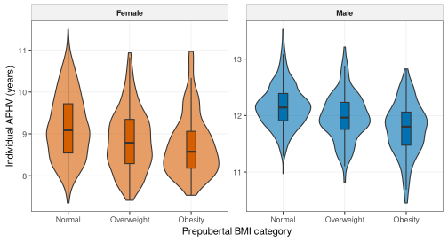
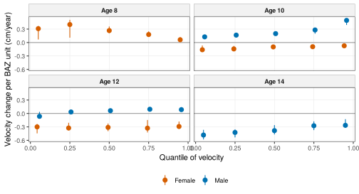
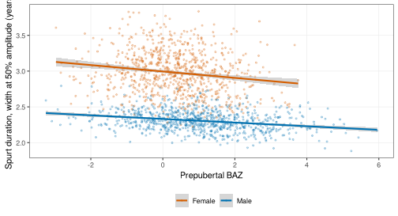

SITAR growth curves and the pubertal growth spurt
Source:vignettes/growth-curves.Rmd
growth-curves.RmdAbout this vignette. All data are simulated with
wgh_simulate(). The results show how the methods work and resemble the published patterns, but they are not the published findings and are not research results. SITAR models use at most 1,000 children each (development mode), the APHV bootstrap uses 10 replicates and the quantile bootstraps 50.
The pubertal growth spurt has a timing (age at peak height velocity, APHV), an intensity (peak height velocity, PHV) and a duration. This vignette shows how to estimate all three from school visits with SITAR models, and how to relate them to prepubertal BMI. It reproduces the analyses of three studies: the pubertal spurt by SITAR (Ho et al. 2026) [1], the distribution of pubertal growth velocity (Ho 2026) [2] and the duration of the spurt (Ho 2026) [3]. The vignette is precomputed because SITAR models take minutes to fit.
library(WeGrowHealthR)
wgh_config("dev") # SITAR on up to 1,000 children per model, few bootstrap replicates
#> WeGrowHealthR run mode: dev
v <- wgh_simulate(30000, seed = 2026)$visits1. Is there enough data at each age?
Mean curves are unreliable where few children are measured.
wgh_age_density() counts children and visits in half-year
bins and reports the age at which the number of children falls below 10%
of its peak (share). The package trims velocity curves at
that age.
ad <- wgh_age_density(v[v$age >= 6, ])
attr(ad, "sparse_from")
#> Female Male
#> 18.5 18.52. Fitting a SITAR model
SITAR (SuperImposition by Translation And Rotation) describes every
child’s height curve as one mean curve shifted in size (a,
cm), timing (b, years, negative means earlier) and
intensity (c, on the log scale, positive means a faster,
more intense spurt). wgh_fit_sitar() wraps
sitar::sitar():
-
dfis the flexibility of the mean spline (4 or 5 is usual), -
fixedandrandomchoose the effects ("a + b + c", or"a + b + c + d"for the extended model), -
age_rangethe ages used andmin_visitsthe visits needed per child, -
max_childrenlimits the number of children (set by the run mode).
It never stops on a failed fit. Instead it keeps the error, so competing models can be compared, and it retries once with one fewer degree of freedom.
boys <- v[v$sex == "Male" & v$age >= 6 & v$age <= 18, ]
fit_m <- wgh_fit_sitar(boys, df = 5, age_range = c(6, 18))
#> SITAR fitted to a random 1000 of 3643 children (run mode "dev").
fit_m
#> <wgh_sitar> "6-18 a+b+c": 3990 visits from 1000 children, df = 5
#> Population APHV 12.03 y, PHV 10.12 cm/y
#> # A tibble: 1 x 15
#> model converged n_children AIC BIC sigma RMSE sd_a sd_b sd_c sd_d min_velocity_tail
#> <chr> <lgl> <int> <dbl> <dbl> <dbl> <dbl> <dbl> <dbl> <dbl> <dbl> <dbl>
#> 1 6-18 a+~ TRUE 1000 14992. 15087. 0.527 0.360 4.47 0.464 0.0715 NA 0.146
#> # i 3 more variables: max_re_corr <dbl>, APHV <dbl>, PHV <dbl>The printout shows the number of children and visits, the population APHV and PHV, and diagnostics: whether the fit converged, whether the velocity curve turns negative in the tails, and the residual SD.
plot(fit_m, type = "both", line_width = 1.2)
plot() takes type = "velocity",
"height" or "both", trim and
show_data, plus the shared display options.
Checking the model
Two checks matter before using the estimates.
wgh_check_identifiable() flags random effects that are
almost perfectly correlated, a sign that the model cannot separate them.
wgh_sitar_select() compares candidate specifications by
BIC, a positive velocity in the tails and stable APHV and PHV, and picks
one by a stated rule (the procedure used for girls in [1]).
wgh_check_identifiable(fit_m)
#> $ok
#> [1] TRUE
#>
#> $max_abs_corr
#> [1] 0.4927345
#>
#> $pair
#> [1] "c-b"
#>
#> $reason
#> [1] "OK: random effects c-b correlated at r = -0.493"
girls <- v[v$sex == "Female" & v$age >= 6 & v$age <= 16, ]
sel <- wgh_sitar_select(girls)
#> SITAR fitted to a random 1000 of 2938 children (run mode "dev").
#> SITAR fitted to a random 1000 of 2757 children (run mode "dev").
#> SITAR fitted to a random 1000 of 2938 children (run mode "dev").
sel$table
#> # A tibble: 3 x 21
#> model converged n_children AIC BIC sigma RMSE sd_a sd_b sd_c sd_d
#> <chr> <lgl> <int> <dbl> <dbl> <dbl> <dbl> <dbl> <dbl> <dbl> <dbl>
#> 1 F1 TRUE 1000 15457. 15545. 0.519 0.339 5.23 0.763 0.103 NA
#> 2 F2 FALSE NA NA NA NA NA NA NA NA NA
#> 3 F3 TRUE 1000 15428. 15548. 0.505 4.19 7.08 1.35 0.144 0.494
#> # i 10 more variables: min_velocity_tail <dbl>, max_re_corr <dbl>, APHV <dbl>, PHV <dbl>,
#> # identifiable <lgl>, plausible_tail <lgl>, good_fit <lgl>, acceptable <lgl>, why_not <chr>,
#> # stable <lgl>
sel$selected
#> [1] "F1"
sel$reason
#> [1] "No candidate met all criteria (F1: velocity falls below the tolerance in the tail; F2: did not converge; F3: residual error more than twice the best model). The first model is kept and its mean curve should be displayed only within the age range with adequate data."
fit_f <- sel$fits[[sel$selected]]Read sel$reason before using the selected model. Here,
with a subsample of 1,000 girls in development mode, no candidate meets
every criterion, so the function keeps the first model and says why each
candidate failed. With the full cohort
(wgh_config("publication")) more candidates may converge.
When none is acceptable, show the mean curve only over the ages with
enough data and report the reason with the results.
3. APHV and PHV with honest intervals
wgh_aphv() gives the population APHV and PHV from the
mean curve. wgh_sitar_ci() adds intervals. The default
method = "bootstrap" resamples children and refits the
model B times, which carries all the uncertainty of the
curve. method = "legacy" reproduces the interval of the
original analysis code (the estimate plus or minus 1.96 times the SD of
individual APHV over the square root of n). It is not a bootstrap: it
treats the spread of individual timing as sampling error, so its width
has no clear meaning, and it is kept only to match published
numbers.
ci_m <- wgh_sitar_ci(fit_m, B = 10)
ci_m
#> # A tibble: 1 x 9
#> method aphv aphv_lower aphv_upper phv phv_lower phv_upper n_children replicates
#> <chr> <dbl> <dbl> <dbl> <dbl> <dbl> <dbl> <int> <int>
#> 1 cluster bootstrap 12.0 12.0 12.1 10.1 10.0 10.2 1000 10
wgh_sitar_ci(fit_m, method = "legacy")
#> # A tibble: 1 x 9
#> method aphv aphv_lower aphv_upper phv phv_lower phv_upper n_children replicates
#> <chr> <dbl> <dbl> <dbl> <dbl> <dbl> <dbl> <int> <int>
#> 1 legacy (not a bootstr~ 12.0 12.0 12.1 10.1 10.1 10.2 1000 NAWith 1,000 children the population curve is estimated precisely, so
both intervals are narrow here. With B = 10 the bootstrap
interval is rough. Use B = 200 or more for a paper
(wgh_config("publication") does that).
4. Individual timing and intensity
wgh_sitar_effects() returns one row per child with the
random effects and the child’s own APHV and PHV. The individual APHV
uses the exact SITAR formula, not an approximation.
early_timing flags children whose timing is earlier than
the population (b < early_cut), and
faster_tempo children with a more intense spurt
(c > 0).
eff_m <- wgh_sitar_effects(fit_m)
eff_f <- wgh_sitar_effects(fit_f)
head(eff_m)
#> # A tibble: 6 x 10
#> id a b c aphv phv early_timing faster_tempo aphv_population sex
#> <chr> <dbl> <dbl> <dbl> <dbl> <dbl> <lgl> <lgl> <dbl> <fct>
#> 1 C000026 4.03 -0.181 0.0765 11.8 10.9 TRUE TRUE 12.0 Male
#> 2 C000036 -0.773 0.183 -0.0597 12.3 9.53 FALSE FALSE 12.0 Male
#> 3 C000044 2.16 -0.286 0.0900 11.6 11.1 TRUE TRUE 12.0 Male
#> 4 C000049 5.20 -0.395 0.0615 11.6 10.8 TRUE TRUE 12.0 Male
#> 5 C000118 -0.985 -0.671 0.0391 11.3 10.5 TRUE TRUE 12.0 Male
#> 6 C000143 -2.93 0.0406 0.0449 12.0 10.6 FALSE TRUE 12.0 Male
summary(eff_m$aphv)
#> Min. 1st Qu. Median Mean 3rd Qu. Max.
#> 10.45 11.78 12.03 12.03 12.30 13.53
summary(eff_f$aphv)
#> Min. 1st Qu. Median Mean 3rd Qu. Max.
#> 7.346 8.492 9.046 9.104 9.634 11.710Girls reach their peak years before boys, the most consistent finding of growth studies, and individual APHV varies around the population value, more in girls than in boys.
Next step. Join these effects to other data by
id, for example to ask whether prepubertal BMI predicts
earlier timing (section 7).
5. Velocity curves of individual children
wgh_velocity_panel() evaluates each child’s velocity
curve on a grid, either by age (time = "age") or by years
from the child’s own APHV (time = "aphv").
observed_only = TRUE keeps only the part of each curve
covered by the child’s visits, so no child is extrapolated.
pan <- wgh_velocity_panel(fit_m, time = "aphv", grid = seq(-4, 4, by = 0.05), observed_only = FALSE)
head(pan)
#> # A tibble: 6 x 5
#> id age time height velocity
#> <chr> <dbl> <dbl> <dbl> <dbl>
#> 1 C000026 7.76 -4 130. 5.71
#> 2 C000026 7.81 -3.95 130. 5.70
#> 3 C000026 7.86 -3.9 131. 5.68
#> 4 C000026 7.91 -3.85 131. 5.66
#> 5 C000026 7.96 -3.8 131. 5.65
#> 6 C000026 8.01 -3.75 131. 5.636. Duration of the spurt
wgh_curve_features() measures the width of each child’s
velocity peak. The default (reference = "takeoff") measures
the width at 25%, 50% and 75% of the spurt amplitude, that is, the rise
from the take-off velocity to the peak. Older code measured the width at
a fraction of PHV (reference = "zero"), but the velocity of
most children never falls to half of PHV before the data start, so that
width is left-censored for most of them. The package reports censoring
so this cannot go unnoticed.
cf <- wgh_curve_features(pan)
summary(cf$width_p50)
#> Min. 1st Qu. Median Mean 3rd Qu. Max.
#> 1.883 2.218 2.303 2.308 2.393 2.811
pan_f <- wgh_velocity_panel(fit_f, time = "aphv", grid = seq(-4, 4, by = 0.05), observed_only = FALSE)
censored <- function(p) c(amplitude = mean(wgh_curve_features(p)$censored_left_p50),
fraction_of_phv = mean(wgh_curve_features(p, thresholds = 0.5, reference = "zero")$censored_left_p50))
rbind(boys = censored(pan), girls = censored(pan_f))
#> amplitude fraction_of_phv
#> boys 0 0
#> girls 0 1width_p50 is the width of the spurt in years at half its
amplitude. The second table gives the share of children whose width
cannot be measured because the velocity curve does not fall far enough
before the data start. Girls start their spurt early, so with the legacy
definition the width is censored for most of them, while the amplitude
definition measures every child.
7. Does prepubertal BMI change the spurt?
The prepubertal exposure is the earliest BAZ from 5 years at or
before 11 years in boys and 9 years in girls (see
vignette("trajectories")).
base <- wgh_index_exposure(v, "baz", name = "pre")
base <- base[!duplicated(base$id), c("id", "pre_value")]
names(base)[2] <- "baz_pre"
e <- merge(eff_m, base, by = "id")
summary(lm(b ~ baz_pre, data = e))$coefficients
#> Estimate Std. Error t value Pr(>|t|)
#> (Intercept) 0.09209288 0.015171065 6.070298 1.937841e-09
#> baz_pre -0.10053821 0.008473308 -11.865285 4.094392e-30A negative slope means higher prepubertal BMI goes with earlier timing.
The second study asked whether the association is the same across the
distribution. wgh_scalar_quantiles() fits quantile
regressions of a child-level outcome with a bootstrap over children, and
reports the OLS estimate alongside:
wgh_scalar_quantiles(e, b ~ baz_pre, "baz_pre", taus = c(0.1, 0.25, 0.5, 0.75, 0.9), B = 50)
#> # A tibble: 6 x 5
#> model tau estimate lower upper
#> <chr> <dbl> <dbl> <dbl> <dbl>
#> 1 quantile 0.1 -0.110 -0.138 -0.0870
#> 2 quantile 0.25 -0.108 -0.133 -0.0890
#> 3 quantile 0.5 -0.0883 -0.116 -0.0701
#> 4 quantile 0.75 -0.0860 -0.0988 -0.0557
#> 5 quantile 0.9 -0.0764 -0.112 -0.0625
#> 6 OLS (mean) NA -0.101 -0.117 -0.0839wgh_mediation() asks how much of the association of BMI
with PHV passes through earlier timing:
wgh_mediation(e, "baz_pre", "b", "phv", B = 50)
#> # A tibble: 4 x 4
#> effect estimate lower upper
#> <chr> <dbl> <dbl> <dbl>
#> 1 Total effect 0.108 0.0828 0.149
#> 2 Natural direct effect -0.00492 -0.0216 0.0348
#> 3 Natural indirect effect 0.113 0.0910 0.141
#> 4 Proportion mediated 1.05 0.763 1.23The total effect is the change in PHV per unit of prepubertal BAZ.
The natural indirect effect is the part that passes through timing
b, and the natural direct effect the rest. A proportion
mediated near or slightly above 1 means that essentially all of the
association works through earlier timing (a proportion above 1 occurs
when the direct effect is slightly negative).
8. The three studies in one call each
wgh_flow_pubertal_spurt() runs the age-density check,
the male model, the female model selection, identifiability checks, APHV
and PHV with intervals, individual effects and the links between
prepubertal anthropometry and timing. Its report is then passed as
spurt to the velocity and duration flows, so the SITAR
models are fitted only once.
spurt <- wgh_flow_pubertal_spurt(v)
#> SITAR fitted to a random 1000 of 3643 children (run mode "dev").
#> SITAR fitted to a random 1000 of 2938 children (run mode "dev").
spurt
#>
#> -- Pubertal growth spurt by SITAR (Ho et al. 2026, medRxiv 2026.07.26.26358986) --
#>
#> Tables (7): age_density, model_diagnostics, aphv_phv_population, individual_effects,
#> individual_summary, timing_models, early_timing_logistic
#> Figures (3): fig_velocity, fig_height, fig_aphv_by_bmi
#> Models: sitar_male, sitar_female
#> Diagnostics: identifiability
#> Settings: mode = dev; ci_B = 0
spurt$tables$aphv_phv_population
#> # A tibble: 2 x 10
#> sex method aphv aphv_lower aphv_upper phv phv_lower phv_upper n_children replicates
#> <chr> <chr> <dbl> <dbl> <dbl> <dbl> <dbl> <dbl> <int> <int>
#> 1 Male legacy (not a ~ 12.0 12.0 12.1 10.1 10.1 10.2 1000 NA
#> 2 Female legacy (not a ~ 9.1 9.06 9.14 7.93 7.89 7.98 1000 NA
spurt$tables$early_timing_logistic
#> # A tibble: 4 x 7
#> sex term odds_ratio lower upper p_value auc
#> <chr> <chr> <dbl> <dbl> <dbl> <dbl> <dbl>
#> 1 Female baz_pre 1.29 1.13 1.47 1.48e- 4 0.631
#> 2 Female haz_pre 1.30 1.05 1.61 1.50e- 2 0.631
#> 3 Male baz_pre 1.51 1.35 1.70 2.65e-12 0.781
#> 4 Male haz_pre 2.98 2.41 3.68 3.36e-24 0.781
plot(spurt, "fig_velocity")
plot(spurt, "fig_aphv_by_bmi")
velocity <- wgh_flow_velocity_distribution(v, spurt = spurt)
velocity$tables$scalar_quantiles
#> # A tibble: 36 x 7
#> sex outcome model tau estimate lower upper
#> <chr> <chr> <chr> <dbl> <dbl> <dbl> <dbl>
#> 1 Male b quantile 0.05 -0.112 -0.141 -0.0929
#> 2 Male b quantile 0.25 -0.108 -0.115 -0.0981
#> 3 Male b quantile 0.5 -0.0883 -0.0996 -0.0797
#> 4 Male b quantile 0.75 -0.0860 -0.0852 -0.0676
#> 5 Male b quantile 0.95 -0.0836 -0.129 -0.0714
#> 6 Male b OLS (mean) NA -0.101 -0.117 -0.0839
#> 7 Male c quantile 0.05 0.00788 0.00385 0.0125
#> 8 Male c quantile 0.25 0.00792 0.00666 0.00969
#> 9 Male c quantile 0.5 0.0116 0.00804 0.0130
#> 10 Male c quantile 0.75 0.0106 0.00748 0.0130
#> # i 26 more rows
duration <- wgh_flow_spurt_duration(v, spurt = spurt)
duration$tables$censoring
#> # A tibble: 4 x 4
#> sex definition pct_left_censored median_width
#> <chr> <chr> <dbl> <dbl>
#> 1 Male amplitude (default) 0 2.30
#> 2 Male fraction of PHV (legacy) 0 4.31
#> 3 Female amplitude (default) 0 2.99
#> 4 Female fraction of PHV (legacy) 100 NA
duration$tables$duration_ols
#> # A tibble: 4 x 7
#> sex model term estimate lower upper p_value
#> <chr> <chr> <chr> <dbl> <dbl> <dbl> <dbl>
#> 1 Female unadjusted baz_pre -0.0447 -0.0628 -0.0266 1.55e- 6
#> 2 Female adjusted_timing_intensity baz_pre -0.00104 -0.00294 0.000854 2.82e- 1
#> 3 Male unadjusted baz_pre -0.0254 -0.0317 -0.0190 1.59e-14
#> 4 Male adjusted_timing_intensity baz_pre 0.000361 0.0000219 0.000700 3.72e- 2
plot(velocity, "fig_velocity_slopes")
plot(duration, "fig_duration_by_bmi", alpha = 0.4)
Where to go next
- The individual SITAR effects are features for prediction
(
vignette("prediction")) and growth phenotypes (vignette("phenotypes-states")). Sizeais estimated from the late visits, so it must not be used to predict late height. The package never joins it. -
wgh_fpca_curves()decomposes the velocity curves into their main shapes.
References
Ho NT, Nguyen QV, Dao AQ, Tran CTL, Pham AN. Pubertal growth spurt characteristics of Vietnamese urban schoolchildren: population and individual level analysis using SITAR. medRxiv. 2026. 2026.07.26.26358986. https://doi.org/10.64898/2026.07.26.26358986
Ho NT. Prepubertal body mass index reshapes the distribution of pubertal growth velocity in Vietnamese children: a SITAR-based quantile analysis. medRxiv. 2026. 2026.09.04.26362313. https://doi.org/10.64898/2026.09.04.26362313
Ho NT. Body mass index and the duration of the pubertal growth spurt in Vietnamese urban children. medRxiv. 2026. 2026.09.09.26362696. https://doi.org/10.64898/2026.09.09.26362696